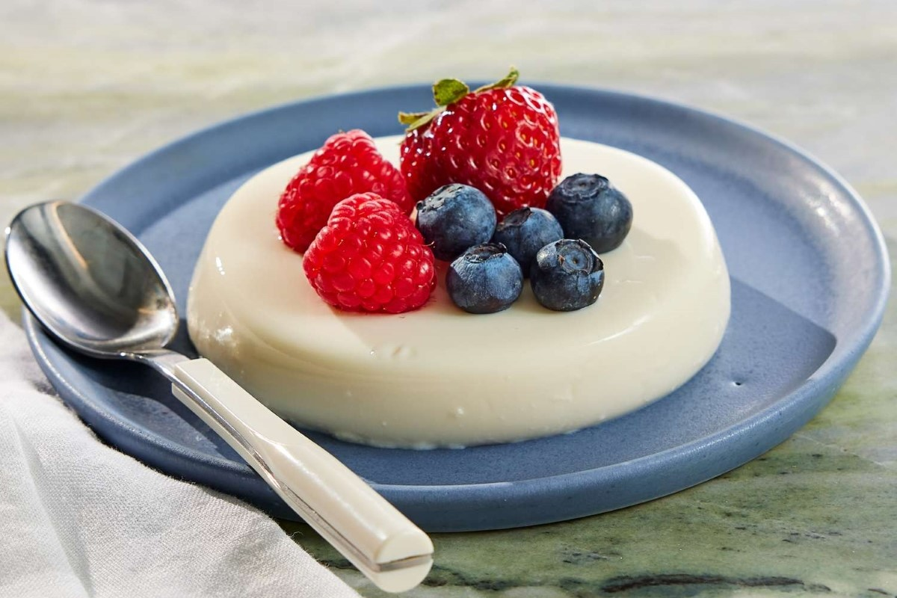

Składniki na 1 porcję
- 100 ml śmietanki 30%
- 1 łyżeczka cukru
- 1/4 laski wanilii
- 1/2 łyżeczki żelatyny
- 50 g owoców do dekoracji
Przygotowanie
- Podgrzej śmietankę z cukrem i wanilią na małym ogniu, nie doprowadzając do wrzenia.
- Rozpuść żelatynę w odrobinie ciepłej wody i dodaj do śmietanki. Wymieszaj dokładnie.
- Przelej mieszankę do foremek i odstaw do lodówki na co najmniej 3 godziny.
- Przed podaniem udekoruj owocami i podawaj schłodzone.